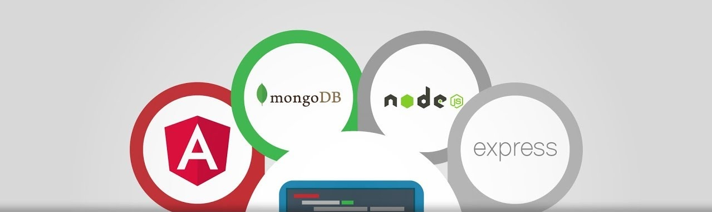

新西兰学IT找不到工作？原来是这个原因......
伴随着2019到来的脚步，新的一年开学季马上就要到了，留学生们纷纷从国内来到美丽的新西兰，准备开始投入新学年的紧张学习中。
与此同时，也意味着很多刚毕业的留学生告别校园，加入求职大军中。
投简历、等回音、面试，没有几个月的时间根本不可能。随着移民政策的不断加紧，对于想通过工作移民，获得PR的中国留学生来说，拿到PR的门槛是越来越高，移民局对于技术移民的薪资水平有了越来越高的要求。要说目前什么方式移民最容易，那莫属于IT技术移民了，尤其是软件方向，长期位居新西兰移民局紧缺专业之首，行业最低薪资也在年薪6W左右，拿到企业offer就能办移民。
但是，现实的情况是是，相当多的留学生从IT专业毕业后，却发现不要说企业的offer拿不到，连面试机会都没有！学IT的学生，花上一年时间也找不到工作的人并不少见。
而与此同时，Seek和TradeMe上大量的招聘信息，很多职位常年招不到人。
为什么会出现这样自相矛盾的现象呢？
我们咨询了Gradspace的资深程序员Edwin Zhu
原因有两点
1.对于新西兰的软件公司而言，由于大部分公司规模都很小，企业大多是没有培养成本的。招募一个应届毕业生或没有本地经验的人的经济风险是很大的，员工一旦跳槽，企业除了之前付出的培训成本打了水漂外，还要花成本去找到能接手工作的人。这也是许多公司宁愿付出更高工资招募有工作经验的员工，也不愿意雇佣刚毕业学生的原因。
2.对于大多数学IT的毕业生而言，在大学所学的课程知识相对滞后，侧重点在基础理论课程（C#,Java等），缺乏实践并和市场严重脱节。我们对Grandspace训练营培训的学员调查发现。这些学员此前都是在新西兰完成的大学学习，他们来自的学校涵盖了几乎所有的本地大学（奥克兰大学，AUT，梅西大学，怀卡托大学，维多利亚大学等）而对于市场流行的商业软件开发环境所用的工具和技术像Angular， React，Node.js, Laravel, MVC，Restful API等, 没有一所大学开设了专门的课程！有的学生甚至快毕业了都没听说过这些名词！

以下是现在新西兰招聘市场常见的技术关键字：
.NET core, Python, SilverStripe, Azure, AWS, Hadoop, Augmented reality, Blockchain, machine learning
UX/UI Designers, PHP Developers, Data Scientists and Engineers, Cyber Security and Data Security
随着时间推移，这种学校与招聘市场脱节现象已经在业内形成了恶性循环。
转 • 机
一年前，两位有着资深软件开发背景的人士Edwin以及Mike，举办Gradspace训练营，来帮助应届毕业生或新移民顺利找到他们的第一份专业工作！
Edwin和Mike有着非常丰富的从业经验，并在十几年的时间里，积累了大量人脉。很多新西兰的IT公司都对训练营计划表示支持。
这里有的只是在职软件工程师和最新的技能和知识。
这里更像是一个为毕业生提供实践机会的桥梁。
我们的特色：
1、讲授所有知识点，配有真实商业软件开发项目实践
和一般实习中培训的机构不同，我们主张先把知识补上，再来专练实战。这不仅更符合华人留学生的学习习惯，效率也更高。对于实践环节，我们有在做的真实的商业软件项目可供学员动手实践，并配有资深程序员一对一指导。一般学员通过3个月的实习，可以完全深入的了解行业领域内的知识并精通其中一到两项。完全可以覆盖新西兰IT公司对于junior程序员的技能要求。
2、中文教知识，英文教实战
我们使用中文教课英文课件及英文资料，实践过程我们使用英文指导，让学员有接近真实的职场环境，不会造成语言的脱节。
3、模拟面试，教你怎么找工作，推荐优秀学员
我们注意到了留学生在具体找工作时会面临的一些技巧性问题，比如该怎么应对面试，怎么找推荐信，对于优秀的学员，我们会提供工作推荐。
我们有专门的面试模拟培训环节，由资深程序员英文面试。整个过程所涉及到的知识点涵盖了目前软件公司偏爱的问题。同时我们也不断收集学员在求职过程中所遇到的面试问题，力求做到真实全面。
最后，也是最重要的一点是，我们保证每位学员都能找到工作，找不到我们退全款。
我们有许多成功的故事：
当前职位: Junior Developer at Hatch Web & Design
参加的课程: Software Developer Programme
Neo于2017年三月来到训练营，刚来的时候他还是ICL business school的学生。在短短不到六个月的时间里，他从只会基础的HTML转变为能够熟练应用Angular 框架、JavaScript 和 TypeScript并结合Laravel 框架提供RESTful API ，最终成为一名full stack web developer。
当前职位: Junior Developer at Lancom Technology
参加的课程: Software Developer Programme
Bill 于2017年6月AUT 毕业后参加训练营， 在这里他深度学习了Angular 框架、restful API等商业项目中用到的实际技术，在完成商业项目的过程中逐渐成长为合格的程序员。
当前职位: Junior Developer at Magiq Software
参加的课程: Software Developer Programme
“Gradspace 帮助我提高了编程技术教了我许多找工作的技巧。在这里你可以和很多有经验的程序员一起完成真实的项目，在这里你学到许多大学课程学不到的知识。非常感谢Gradspace给我这么好的实践机会”
Gradspace简介：
Gradspace是一个旨在训练与培养高校IT专业毕业生进入职场的训练营。它源于一个商业项目www.learnspace.co.nz，在这个项目的开发过程中，我们先后招聘了20多个学生，指导他们学习和开发商业项目，最终全部找到工作并在职场上展现了有竞争力的水平。有了这一先例，我们的创始人Edwin与Mike决定创立Gradspace来继续培养毕业生，帮助更多的新西兰留学生完成从学校到职场的过渡。通过我们的项目让更多的学生有机会利用大学里所学的知识动手实践，从而有实实在在的东西写在CV中，少走弯路并能够在短时间里找到理想的工作，实现自己在新西兰的梦想。
训练营导师简介：
Edwin Zhu，Gradspace创始人之一，湖南师范大学毕业后起初从事软件教学工作，而后就职多家上市软件企业，历任程序员、研发经理、项目经理、售前经理、产品经理、部门经理等职务，二十多年软件开发经验，精通新西兰软件行业主要流行的开发技术，并且对软件培训有着深刻理解。
Denise Zhang，Gradspace创始人之一，奥克兰大学毕业，先后就职于ANZ, Victoria University of Wellington, 新西兰教育部，从事过testing analyst，senior developer analyst等职务，参加过数十个软件项目，了解新西兰软件行业现状。
Mike Lee，Gradspace 创始人，同时也是learnspace创始人 ，自学成为资深程序员，精通前后端软件技术，独自开发和建立learnspace网站系统以及多个网站软件系统，通过自身经历，了解毕业生成长为程序员过程中痛点和关键点，亲手成功培养了十多名软件程序员。
课程介绍：
1.职业规划
做一个属于您自己的职业规划是我们项目的第一步，我们会安排资深导师根据您的背景和期望为您订制未来的学习计划
2.有针对性的学习相关知识
学习相关的IT工业标准，学习当下流行的主流编程技术（例如前端：Bootstrap、JavaScript、JQuery、TS、Angular、React；后端：C#、PHP、 ASP.Net、MVC、API、Laravel、 Node.js (express)；数据库：SQL server, NoSql，工具：Postman、WebPack、Gulp、Git、Docker、Cloud）
3.商业实践
通过真实项目获取实践技能。
项目包括：XX电商网站项目、XX管理系统项目、XX数据挖掘系统项目
我们将学员组队进行真实项目合作演练，您可以自己选择前端或者后端。
4.求职指导
根据我们的承诺，我们会一直陪伴您直到您找到工作。我们提供一对一CV写作指导，并帮您模拟面试，分析面试过程问题。通过我们与新西兰各界的联系帮您进行职业推荐。
详细信息欢迎联系我们：
Web: www.gradspace.org
微信ID: mike_l23
Email: info@learnspace.co.nz
Phone: +64 21 02264770